Pineapple Feature Drop 8/2026
Xin chào xin chào, sau vài tháng thì team đã quay trở lại rồi đây, với nhiều thứ mới mẻ lúc mà chị mở giao điện dã có sự khác biệt ròi đó. Và còn tính năng mới khác sẽ bắt đầu ngay bây giờ thoi
1. Tương lai của ứng dụng và kênh chat
Sau khi phiên bản này ra mắt, sẽ có những bản hotfix nếu lỗi. Ngoài ra, bản cập nhật tiếp theo sẽ là bản cập nhật tháng 12. Sẽ có các tính năng mới như OBS Overlay Hub, Playlist, Video.... và vô vàn các chức năng khác.
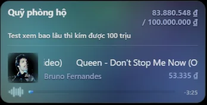
OBS Overlay Hub (experimental)
Với kênh chat, đây sẽ là kênh chat cuối cùng em làm riêng, hiện tại chị cũng có kha khá người có thể làm điều đó và tốt hơn em nhiều, nhất là cái người mà làm kênh chat cho ai khác ấy. Nên lần này sẽ là thiết kế chung chung, quay trở lại thiết kế dứa từ trước đó và có nhiều thứ thú vị hơn, lời chào đầu cũng đã loại bỏ để tăng cường hiệu năng.
Ok rồi, chúng ta bắt đầu những gì mới trong phiên bản này nào.
2. Thay đổi về chất lượng và hiệu năng app
- Loại bỏ theme không sử dụng, chỉ giữ lại 3 theme duy nhất, giúp app tăng khả năng xử lý lên tới 40% so với phiên bản trước
- Loại bỏ phát hiện nội dung nhạy cảm do phức tạp về thuật toán xử lí gây nặng máy.
- Giao diện cài đặt được thiết kế lại để khoa học hơn.
- Hiện có thể chuột phải để copy, paste nếu muốn
- Có thể chuột trái vào tiêu đề bài hát để có thể mở bài hát đó trên trình duyệt.
- Có thể ghim bài hát để ưu tiên phát bài hát ở lượt tiếp theo, không bị ảnh hưởng bởi các donate mới
3. Chức năng Vote Skip
Hiện vote skip có thể thực hiện và hoạt động bình thường, chị có thể thử nếu muốn.
4. Gia hạn thời gian
Đang lỗi mặc dù có nhưng không sử dụng được. Mặc định tắt.
5. Tìm kiếm
- Tốc độ tìm kiếm được tăng lên x2 lần so với phiên bản trước
- Nội dung tìm kiếm to hơn, giúp cho việc nhìn trên màn hình rõ ràng hơn,
- Khi paste link vào ô Tìm kiếm, sẽ có preview hiện ra để chắc chắn đã paste đúng bài hay chưa.
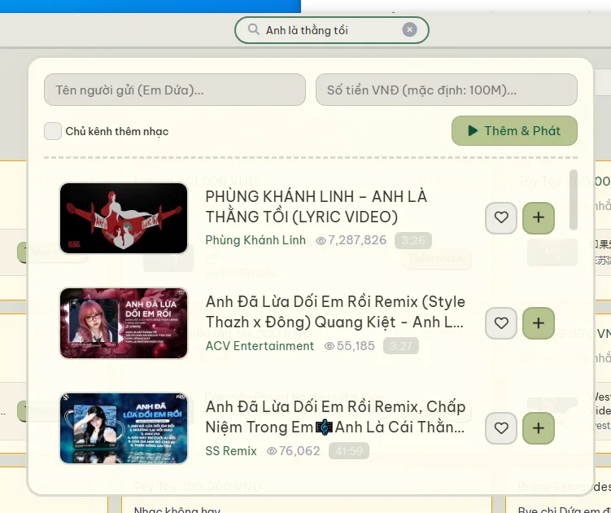
Tìm kiếm
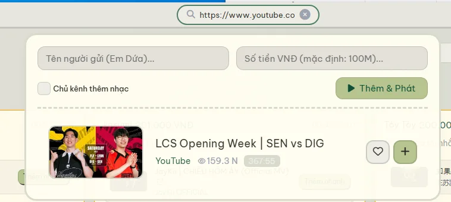
Paste link Preview
6. Yêu thích
Hiện tại, nếu chị muốn tiện lợi hơn khi mở những bài yêu thích, chị có thể lưu nó lại bằng cách nhấn nút trái tim, nó sẽ lưu riêng vào 1 list yêu thích để khi nào muốn mở nhanh không cần tìm thủ công nữa.
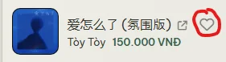
Lưu lại Yêu thích bằng nút Tim có mặt ở search và trình phát bài hát
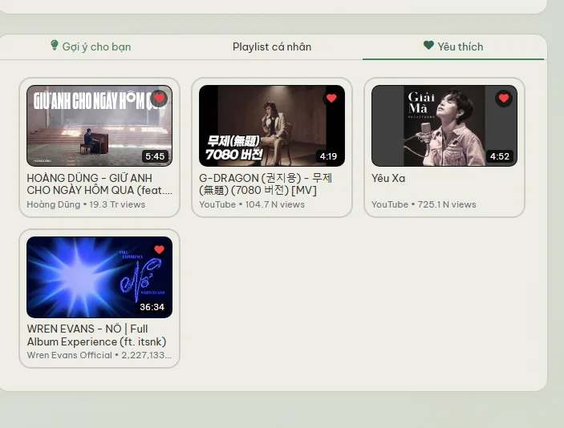
Danh sách yêu thích
7. Thay đổi về giao diện hợp với Set 18 TFT Enchanted Wilds
Giao diện đã đổi từ màu vàng sang màu xanh của khu rừng, với tone màu tối ưu hoá cho việc hiển thị app vào ban đêm, để người sử dụng đỡ phải mỏi mắt so với giao diện Dứa hiện tại.
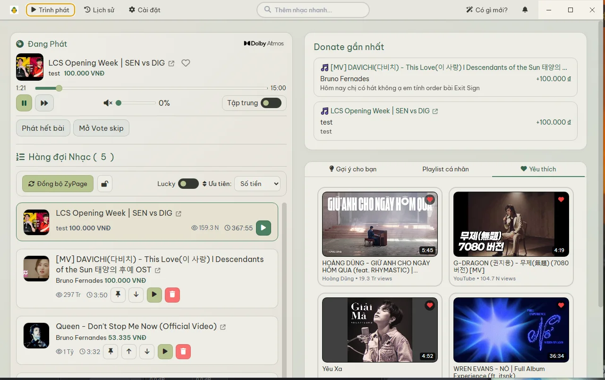
Hình ảnh minh họa
Overlay cũng đã thay đổi và thêm theme Set 18 phù hợp. Bố cục của Overlay hiện tại sẽ rõ ràng ai là người order bài hát, bài hát nào đang được chủ kênh phát. Đếm ngược và Donate mới với hiển thị rõ ràng, cho phép hiển thị luôn thời lượng của bài hát.
- Tính năng mới: Hiển thị bảng giá, hiển thị mốc tiền ứng với số phút trên overlay, có thể bật hoặc tắt trong cài đặt
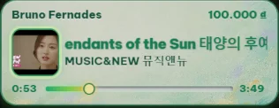
Overlay thường
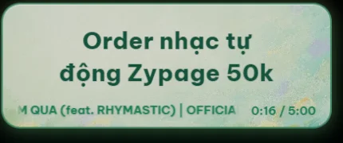
Overlay chủ kênh
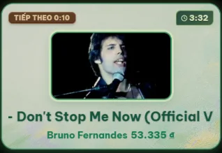
Đếm ngược 15s mới
8. Lịch sử Donate và thông báo donate ở Taskbar
Sau khi cập nhật ứng dụng, sẽ bắt đầu lưu trữ lại Tab Lịch sử, cho phép lưu lại lịch sử donate trên máy, cũng như bài hát họ bật lên. Có thể thêm lại bài hát nếu bị miss mất hoặc một lí do nào khác. Khi nhấn vào donate bất kỳ, sẽ phóng to donate và hiển thị chi tiết donate đó. Có thể tìm kiếm donate theo người, nội dung, số tiền.... super search.
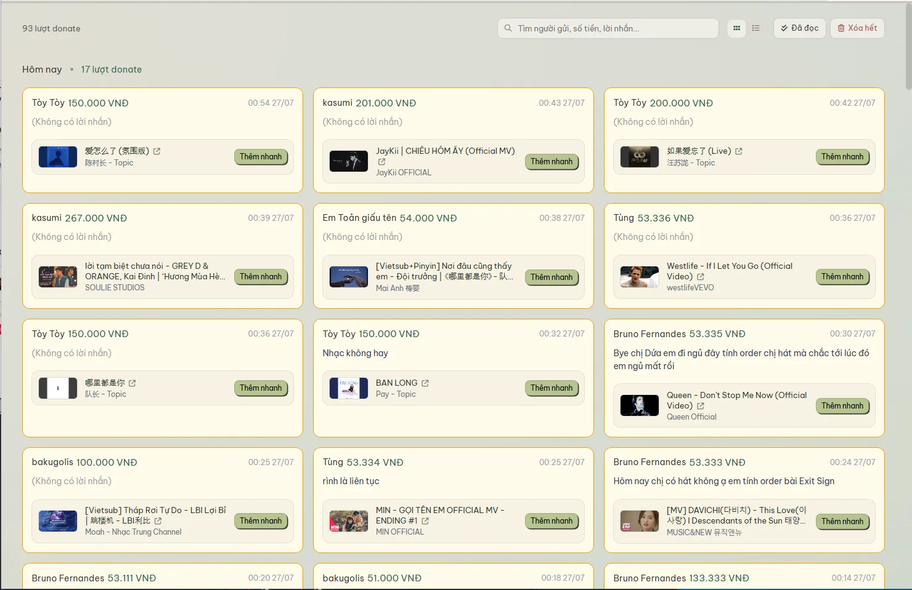
Hình ảnh minh họa
Khi có donate mới, thông báo sẽ được hiển thị tại màn hình phụ, về tên người donate, video, nội dung donate. Thời gian hiển thị sẽ flex theo nội dung. Tối đa 30s.
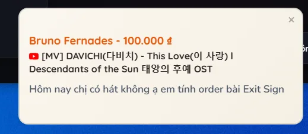
Hình ảnh minh họa
9. Extension
Extension cho phép tương tác trên giao diện YouTube của Trình duyệt, Khi nhấn vào dấu + hoặc thêm nhanh, bài hát sẽ được đưa ngay vào Queue.
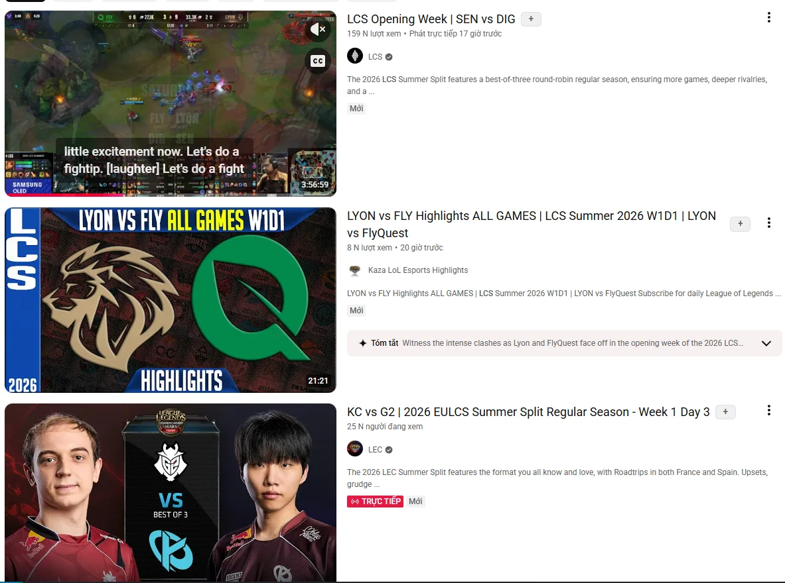
Hình ảnh minh họa
Extension nếu chị muốn thì có thể liên hệ để em cài remote cho chị từ xa.
10. Phát nhạc bị chặn bởi Iframe
Với những bài hát bị chặn ở phương thức phát thông thường, Trình phát sẽ chuyển ra phát qua công nghệ DirectStream để tiếp tục phát. Tính năng này cần cài đặt và tải xuống 1 tiện ích YT DLP. Có sẵn ở mục Cài đặt -> Phát lại
11. Tổng kết
Cuối cùng đó là toàn bộ tính năng mới hiện tại trong app. Một lần nữa, team luôn cảm ơn chị vì đã luôn ủng hộ app và những gì em làm. Trong lúc sử dụng app chắc chắn không thể thoát khỏi các lỗi, vì vậy em mong chị luôn giúp team phát hiện lỗi khi vận hành để cải thiện thêm chất lượng app.
Xong ròi đó, cảm ơn chị đã đọc hết nha, pai pai.